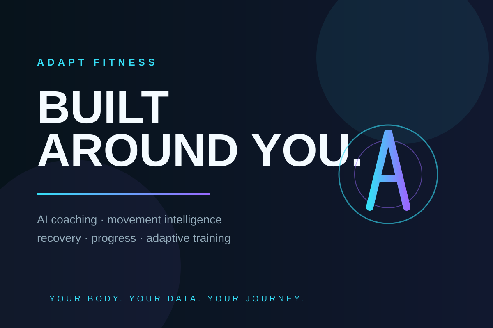
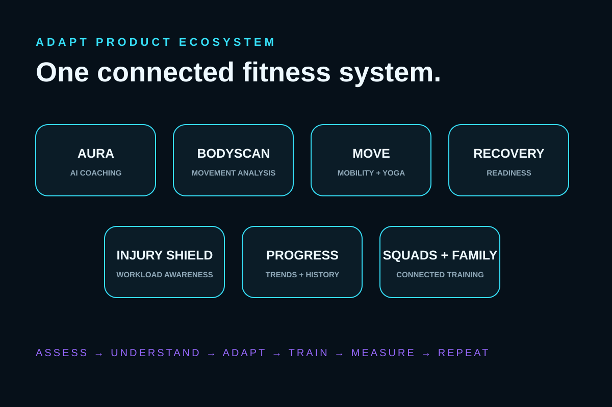
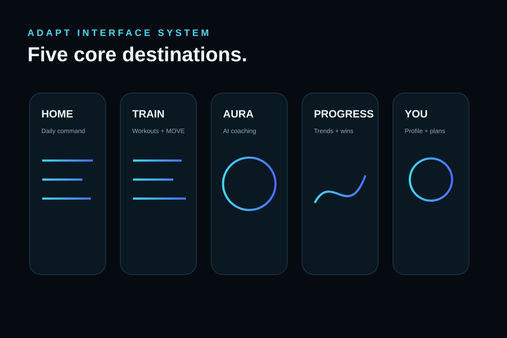
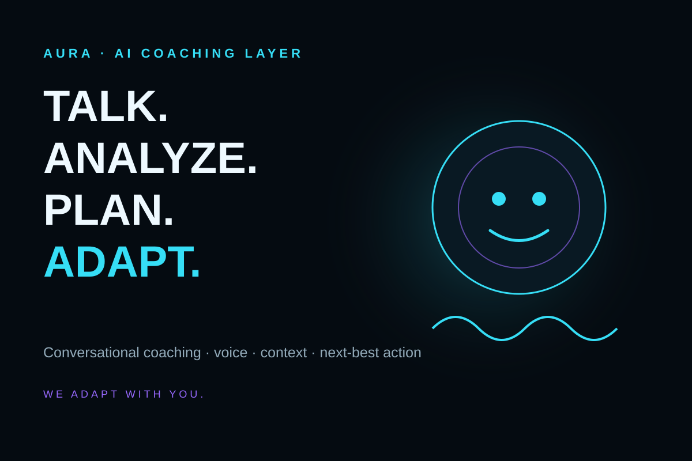

The problem
Fitness tools often fragment training, recovery, movement quality and coaching into separate experiences. ADAPT was designed around a single connected decision system.
ADAPT Fitness is a mobile-responsive fitness platform combining personalized training, AI coaching, movement analysis, recovery/readiness, progress tracking and adaptive product logic in one ecosystem.

I treated ADAPT as a real product: define the problem, shape the experience, build the core system, test it, deploy it, learn from the limitations, and keep iterating.
Fitness tools often fragment training, recovery, movement quality and coaching into separate experiences. ADAPT was designed around a single connected decision system.
Collect useful evidence, understand the athlete's current state, then change what the platform recommends next — without pretending weak data is certain.
Rapid AI-assisted product development paired with React, Supabase, serverless APIs, deterministic testing, browser camera work and continuous iteration.

Concept direction illustrating the product system. Built capabilities and future R&D are clearly separated throughout this case study.
Conversational coaching and voice delivery connected to the rest of the fitness experience.
Working capabilityBrowser-camera movement capture, pose landmarks, viewpoint checks and confidence-aware movement analysis.
Implemented foundationYoga, mobility, stretching, breathing and recovery sessions separated from strength-volume analytics.
Implemented moduleA user-state layer for translating recovery information into more useful training guidance.
Application capabilityWorkload and movement-pattern awareness designed to help constrain training decisions without making medical diagnoses.
Integration evolvingTraining, movement and consistency data organized around making improvement understandable over time.
Core experienceConnected-account and group concepts for shared training experiences and household support.
Platform capabilityFuture R&D around synchronized group sessions with participant-specific adaptations and AI-directed continuity.
R&D / futureBodyScan was developed as a privacy-conscious movement-analysis foundation. The system uses pose landmarks and camera-viewpoint checks to determine what can be measured reliably before turning movement into user-facing feedback.
ADAPT’s movement work was designed around qualifying personal baselines rather than treating every user as a generic average. Repeated observations, confidence and deviation rules provide a more personal reference point for later comparisons.
The BodyScan design emphasizes transient camera processing and derived metrics rather than routine retention of raw video. It is movement analysis — not identity recognition, surveillance or medical diagnosis.
The core application is a React/Vite product with database, authentication, serverless APIs, AI integrations, camera analysis, payments and deployment work.
ADAPT development includes deterministic test coverage across biomechanics, the BodyScan engine, pose adapters, camera behavior, viewpoint contracts and data-retention logic.
PASS viewpoint contract PASS unsupported camera angle abstains PASS required landmark visibility PASS biomechanical bridge mapping PASS movement session classification PASS privacy retention policy ALL SELECTED TESTS PASSED
ADAPT’s visual direction uses deep black/graphite surfaces, electric cyan/blue light, clean high-contrast typography and performance-HUD cues.


These lightweight public visuals represent the brand and product direction while the richer portfolio assets remain separate from the source repository.
I have been responsible for turning a broad vision into an increasingly concrete product: shaping requirements, making product decisions, directing UX, working through implementation, testing the system and documenting what comes next.
Defined the product vision, feature system, priorities, tiering and roadmap.
Developed navigation, product hierarchy, screen concepts and brand direction.
Used modern AI tools to accelerate architecture, implementation, debugging and iteration while making product decisions and validating outputs.
Worked in the React/Vite codebase across application modules, responsive behavior and integrations.
Worked through camera constraints, entitlements, auth, APIs, PWA behavior, deployment and data flows.
Built test-driven checkpoints, investigated movement-analysis limitations and documented technical decisions.
Training, progress and core utility.
AI coaching and voice layer.
Broader state and movement support.
Camera-based movement intelligence.
Viewpoint, confidence and abstention.
Connecting evidence to better next actions.
This public portfolio intentionally stays at a high level and does not disclose confidential control logic, thresholds, claim language or trade-secret details.
Product Builder · AI-Assisted Front-End Developer · Calgary, Alberta · Open to remote opportunities across Canada.
Selected ADAPT visuals are concept and brand-development artifacts. Product claims are intentionally separated by status to avoid presenting roadmap work as shipped functionality. Code samples available on request subject to privacy and access restrictions.